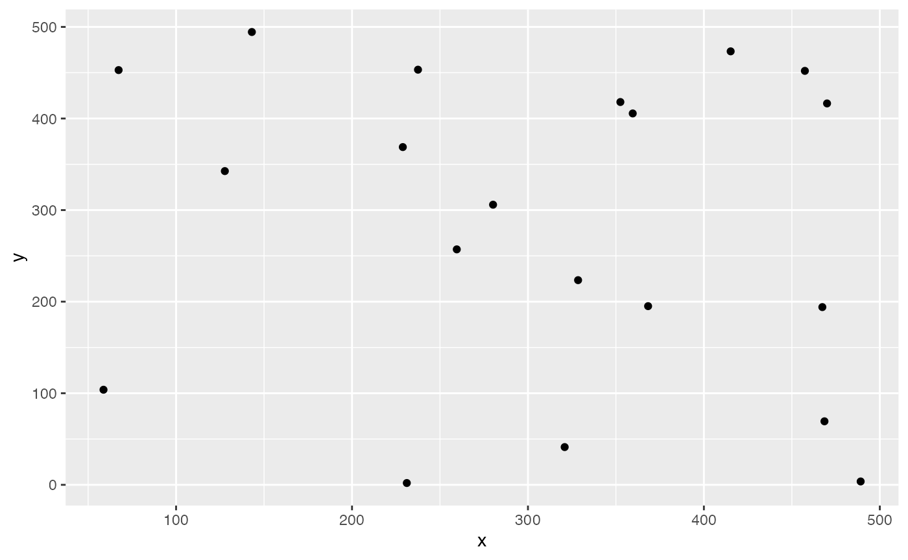
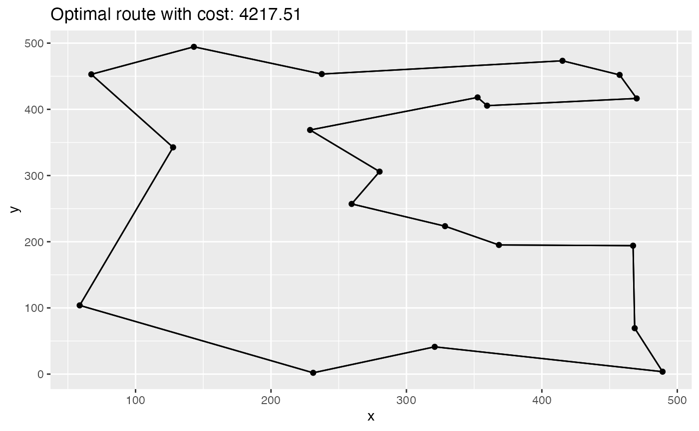

tsp-subtour.RmdThis vignette describes how to solve a TSP using rmpk and subtour elimination constraints using solver callbacks.
Wikipedia gives the following definition:
The travelling salesman problem (TSP) asks the following question: Given a list of cities and the distances between each pair of cities, what is the shortest possible route that visits each city exactly once and returns to the origin city?
Also that Wikipedia article is a good starting point if you want to know more about the topic.
With the basic definition you have a set of verticies (cities) and a set of edges (connection between cities). Each edge has an associated distance \(d > 0\). That distance could be travel time, distance in km or the monetary cost associated with traveling from one city to another. Restrictions on the distances lead to special cases of the problem. For example the metric-TSP requires that the triangle inequality holds for all triples of edges.
In this vignette we will construct a TSP with random points within an Euclidean space.
First let us import some librarys
The number of cities:
n <- 20Boundary of our Euclidean space:
# from 0 to ...
max_x <- 500
max_y <- 500Some random cities:
set.seed(42)
cities <- data.frame(id = 1:n, x = runif(n, max = max_x), y = runif(n, max = max_y))
ggplot(cities, aes(x, y)) +
geom_point()
Now the distance matrix
There are essential two prominent ways to model a TSP as a MILP. One is to formulate the full model using the Miller–Tucker–Zemlin (MTZ) formulation and the other option is to use the so-called sub-tour elimination constraints .1
The first formulation is fairly compact (quadratic many constraints and variables) but is not suitable anymore when n gets larger. The second formulation has exponential many constraints at most, but can solve larger TSPs due to the better LP relaxation. The idea of the latter approach is add constraints to the model during the solution process as soon as a solution was found that contains a sub-tour. For solution strategies like this solvers usually offer callbacks that let’s you modify the model during the the branch-and-cut process.
In this article we implement the model shown in the TSP Gurobi Example, but instead of Gurobi we will use GLPK to solve it.
solver <- GLPK_optimizer(presolve = FALSE)
model <- optimization_model(solver)
# we create a variable that is 1 iff we travel from city i to j
# filter guards are not yet supported so we generate all possible combinations
# although the graph is undirected
x <- model$add_variable("x", i = 1:n, j = 1:n,
type = "integer", lb = 0, ub = 1)
# minimize travel distance
model$set_objective(sum_expr(distance[i, j] * x[i, j], i = 1:n, j = 1:n), "min")
# you cannot go to the same city
model$set_bounds(x[i, i], ub = 0, i = 1:n)
# the model is undirected
model$add_constraint(x[i, j] == x[j, i], i = 1:n, j = 1:n)
# if you enter a node you have to leave it as well
model$add_constraint(sum_expr(x[i, j], j = 1:n) == 2, i = 1:n)
model
#> MIP Model:
#> Variables: 400
#> Constraints: 420The callback is invoked whenever there is a new lower bound found in a search node. We first check if all variables are integral. If that is the case then we use the igraph package to check if the shortest circle does not contain all cities. If that is also true we add the sub-tour elimination constraint.
row_count <- 0L #let's count the number of rows we add
set_irowgen_callback(solver, function() {
# first we construct an adjacency matrix
# we also stop if we find fractional values
adjacency_matrix <- matrix(0L, nrow = n, ncol = n)
for (i in 1:n) {
for (j in 1:n) {
val <- glpk_get_col_prim(solver, x[i, j])
adjacency_matrix[i, j] <- as.integer(val == 1)
if (adjacency_matrix[i, j] %% 1 != 0) { # not all integral
return()
}
}
}
# find the shortest circle and check if that tour does not contain all the nodes
# if yes, we add a subtour elimination constraint
graph <- igraph::graph_from_adjacency_matrix(adjacency_matrix, mode = "undirected")
shortest_circle <- igraph::girth(graph, TRUE)
circle_size <- shortest_circle$girth
if (circle_size < n && circle_size > 1) {
first_v <- shortest_circle$circle[[1L]]
prev_v <- first_v
expr <- 0
for (v in shortest_circle$circle[2:circle_size]) {
expr <- expr + x[prev_v, v]
prev_v <- v
}
expr <- expr + x[prev_v, first_v]
model$add_constraint(expr <= circle_size - 1)
row_count <<- row_count + 1L
}
})This model can now be solved by one of the many solver libraries.
model$optimize()We added 24 rows during the search process.
To extract the solution we can use get_variable_value method that will return a data.frame which we can further be used with tidyverse packages.
| name | i | j | value |
|---|---|---|---|
| x | 12 | 10 | 1 |
| x | 3 | 19 | 1 |
| x | 13 | 2 | 1 |
Now we need to link back the indexes in our model with the actual cities.
paths <- select(solution, i, j) %>%
rename(from = i, to = j) %>%
mutate(trip_id = row_number()) %>%
tidyr::gather(property, idx_val, from:to) %>%
mutate(idx_val = as.integer(idx_val)) %>%
inner_join(cities, by = c("idx_val" = "id"))
kable(head(arrange(paths, trip_id), 4))| trip_id | property | idx_val | x | y |
|---|---|---|---|---|
| 1 | from | 12 | 359.5561 | 405.5276 |
| 1 | to | 10 | 352.5324 | 418.0021 |
| 2 | from | 3 | 143.0698 | 494.4459 |
| 2 | to | 19 | 237.4985 | 453.3007 |
And plot it:
ggplot(cities, aes(x, y)) +
geom_point() +
geom_line(data = paths, aes(group = trip_id)) +
ggtitle(paste0("Optimal route with cost: ", round(model$objective_value(), 2)))
Do you have any questions, ideas, comments? Or did you find a mistake? Let’s discuss on Github.